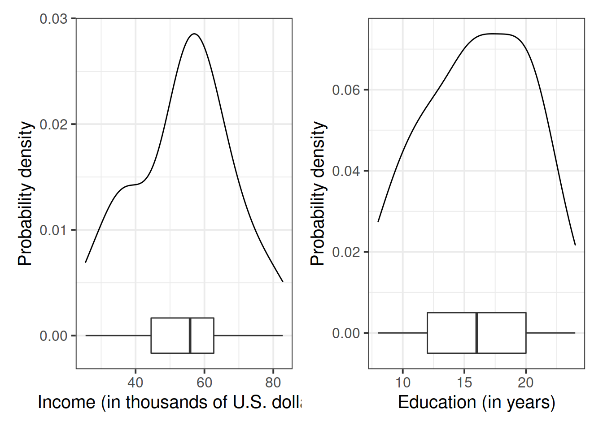
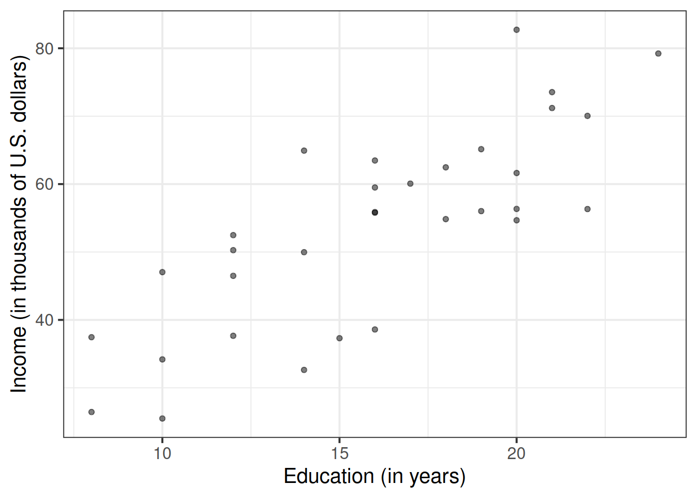
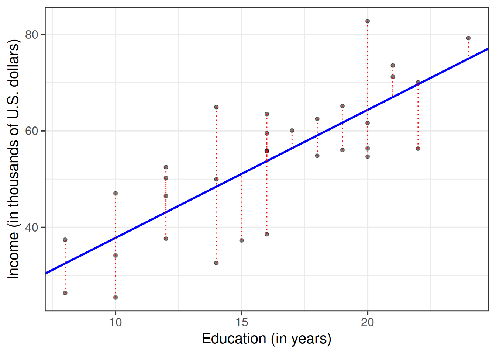
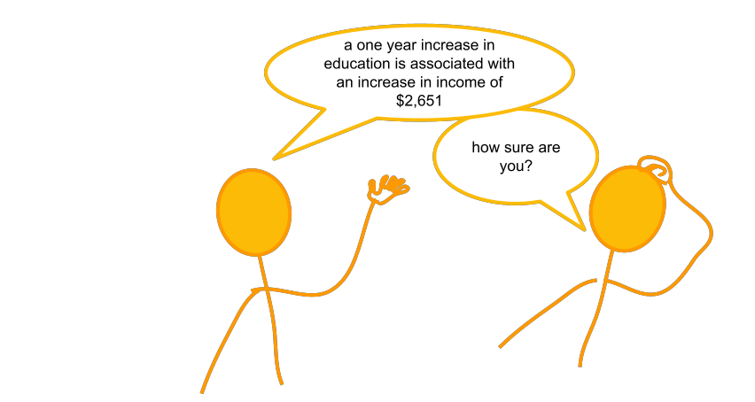
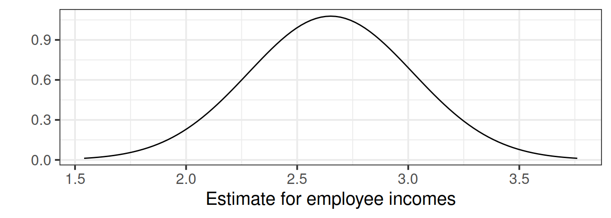
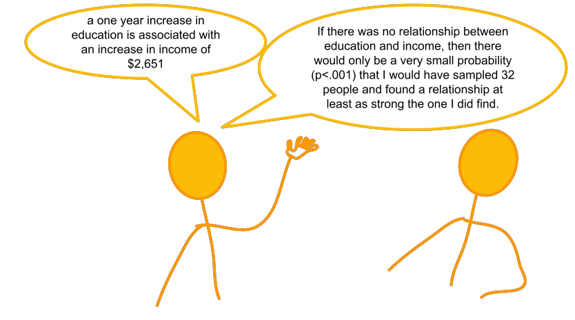
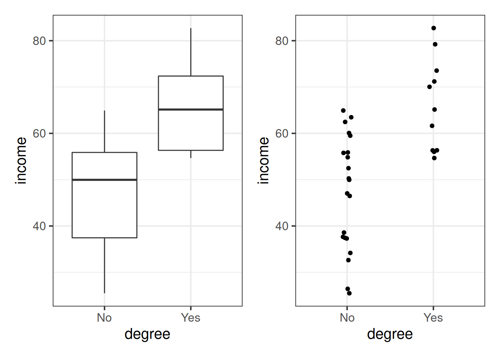
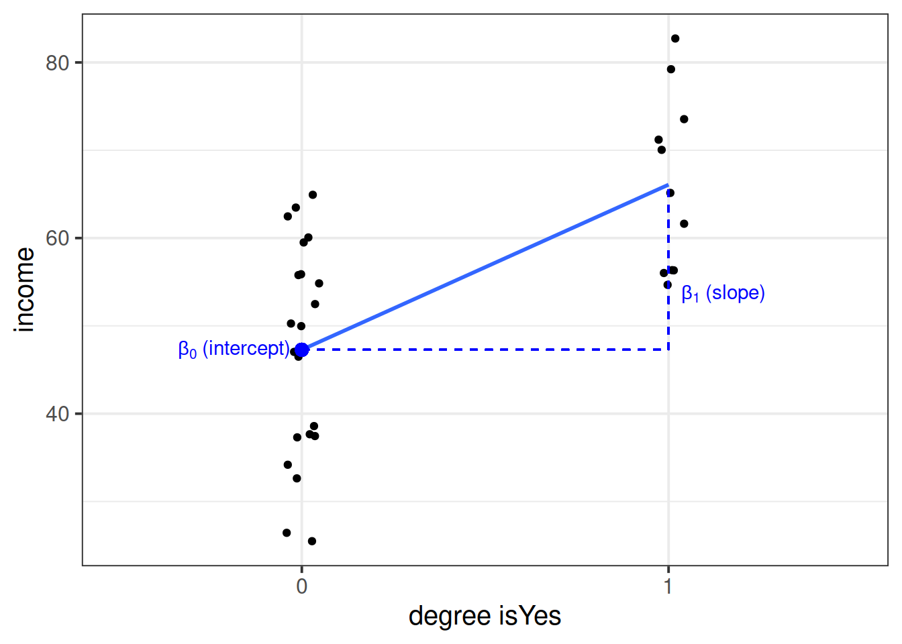

| education | income | seniority | gender | male | party |
|---|---|---|---|---|---|
| 8 | 37.449 | 7 | male | 1 | Democrat |
| 8 | 26.430 | 9 | female | 0 | Independent |
| 10 | 47.034 | 14 | male | 1 | Democrat |
| 10 | 34.182 | 16 | female | 0 | Independent |
| 10 | 25.479 | 1 | female | 0 | Republican |
| 12 | 46.488 | 11 | female | 0 | Democrat |
07A: Simple Linear Regression
This walkthrough covers the basics of simple linear regression conducted in R.
Our data for this walkthrough is from an hypothetical study into income disparity for employees in a local authority. We’re interested in investigating the link between the level of education and an employee’s income. Those with more formal education seem to be better paid.
Data: riverview.csv
The riverview data, which come from Lewis-Beck, 2015, contain five attributes collected from a random sample of \(n=32\) employees working for the city of Riverview, a hypothetical midwestern city in the US. The attributes include:
education: Years of formal educationincome: Annual income (in thousands of U.S. dollars)seniority: Years of senioritygender: Employee’s gendermale: Dummy coded gender variable (0 = Female, 1 = Male)party: Political party affiliation
The first six rows of the data are:
The data is available at https://uoepsy.github.io/data/riverview.csv.
We begin by loading the required libraries (probably just tidyverse for now), and reading in the riverview data to our R session.
We’re going to name it riverview in our environment.
library(tidyverse)
riverview <- read_csv("https://uoepsy.github.io/data/riverview.csv")
head(riverview)# A tibble: 6 × 6
education income seniority gender male party
<dbl> <dbl> <dbl> <chr> <dbl> <chr>
1 8 37.4 7 male 1 Democrat
2 8 26.4 9 female 0 Independent
3 10 47.0 14 male 1 Democrat
4 10 34.2 16 female 0 Independent
5 10 25.5 1 female 0 Republican
6 12 46.5 11 female 0 Democrat The Research Question
Now we wouldn’t have time to interview everyone who works for the local authority so we would have to interview a sample, say 10%. We might carry out interviews and find that there is a link It is always important to keep in mind your research question. We shouldn’t simply explore all possible relationships in our dataset and then decide post-hoc on what is an interesting question. This would undermine the process of hypothesis testing. Because there’s always a chance we’re going to find a significant relationship in our sample even when there isn’t actually one in the population, by digging around to find any significant result we increase that chance.
Our research question for this walkthrough is below:
Is there a relationship between education level and income?
Note that we are not specifying a direction here.
Exploring the data
Probably the first port of call for almost any statistical analysis is to just explore the data and make sure that things look as you would expect them to look. We can do this visually, or numerically, using the skills we have already learned in the first half of this course.
Let us first visualise and describe the marginal distributions of those variables which are of interest to us. These are the distribution of each variable (employee incomes and education levels) without reference to the values of the other variables.
We could use, for example, geom_density() for a density plot or geom_histogram() for a histogram. We should look at the shape, center and spread of the distribution. Is it symmetric or skewed? Is it unimodal or bimodal? Do we notice any extreme observations?
We can plot the marginal distribution of employee incomes as a density curve, and add a boxplot underneath to check for the presence of outliers. The width of the geom_boxplot() is always quite wide, so I want to make it narrower so that we can see it at the same time as the density plot. Deciding on the exact value for the width here is just trial and error:
library(patchwork)
# the patchwork library allows us to combine plots together
ggplot(data = riverview, aes(x = income)) +
geom_density() +
geom_boxplot(width = 1/300) +
labs(x = "Income (in thousands of U.S. dollars)",
y = "Probability density") +
ggplot(data = riverview, aes(x = education)) +
geom_density() +
geom_boxplot(width = 1/100) +
labs(x = "Education (in years)",
y = "Probability density")
The plots suggests that the distributions of employee incomes and education levels are both unimodal. Most of the incomes are between roughly $45,000 and $70,000, and most people have between 12 and 20 years of education. Furthermore, the boxplot does not highlight any outliers in either variable.
To further summarize a distribution, it is typical to compute and report numerical summary statistics such as the mean and standard deviation. One way to compute these values is to use the summarise()/summarize() function from the tidyverse library:
riverview %>%
summarize(
e = mean(income),
sd_income = sd(income),
mean_edu = mean(education),
sd_edu = sd(education)
)# A tibble: 1 × 4
e sd_income mean_edu sd_edu
<dbl> <dbl> <dbl> <dbl>
1 53.7 14.6 16 4.36The marginal distribution of income is unimodal with a mean of approximately $53,700. There is variation in employees’ salaries (SD = $14,553).
The marginal distribution of education is unimodal with a mean of 16 years. There is variation in employees’ level of education (SD = 4.4 years).
After we’ve looked at the marginal distributions of the variables of interest in the analysis, we typically move on to examining relationships between the variables.
We want to visualise the relationship between income and level of education among the employees in the sample, and think about direction of association; form of association (can it be summarised well with a straight line?); strength of association (how closely do points fall to a recognizable pattern such as a line?); unusual observations that do not fit the pattern of the rest of the observations and which are worth examining in more detail.
Because we are investigating how income varies when varying years of formal education, income here is the dependent variable (on the y-axis), and education is the independent variable (on the x-axis).
ggplot(data = riverview, aes(x = education, y = income)) +
geom_point(alpha = 0.5) +
labs(x = "Education (in years)",
y = "Income (in thousands of U.S. dollars)")
There is a strong positive linear relationship between education level and income for the employees in the sample. High incomes tend to be observed, on average, with more years of formal education. The scatterplot does not highlight any outliers.
To comment numerically on the strength of the linear association we might compute the correlation coefficient that we were introduced to in Reading 5A
riverview %>%
select(education, income) %>%
cor() education income
education 1.0000000 0.7947847
income 0.7947847 1.0000000that is, \(r_{\text{education, income}} = 0.79\)
Fitting a Linear Model
The plot created in the above highlights a linear relationship, where the data points are scattered around an underlying linear pattern with a roughly-constant spread as x varies.
We will try to fit a simple (one explanatory variable only) linear regression model:
\[ \begin{align} & Income = b_0 + b_1 \ Education + \epsilon \quad \\ & \text{where} \\ & \epsilon \sim N(0, \sigma) \text{ independently} \end{align} \]
You will see a variety of different ways of specifying the linear model form in different resources, some use \(\beta\), some use \(b\). Sometimes you will see \(\alpha\) instead of \(b_0\).
where “\(\epsilon \sim N(0, \sigma) \text{ independently}\)” means that the errors around the line have mean zero and constant spread as x varies (we’ll read more about what this means later in this course, when we discuss the assumptions underlying regression).
To fit linear models, we use the lm() function.
The syntax of the lm() function is:
[model name] <- lm([response variable] ~ 1 + [explanatory variable], data = [dataframe])
Using the lm() function, we fit a linear model to the sample data, in which employee income is explained by education level. Typically, we assign it to a name to store it in our environment, so that we might access it later.
As the variables are in the riverview dataframe, we would write:
model1 <- lm(income ~ 1 + education, data = riverview)Interpreting coefficients
Now we have fitted our model, we need to understand what it can tell us. The main parts of interest are the estimates of the intercept (\(b_0\)) and the slope (\(b_1\)).
As we assigned our linear model object to the name model1 in R, then to obtain the estimated regression coefficients we can use it’s name in various ways and with various functions.
- type
model1, i.e. simply invoke the name of the fitted model; - type
model1$coefficients; - use the
coef(model1)function; - use the
coefficients(model1)function; - use the
summary(model1)function and look under the “Estimate” column.
The estimated parameters returned by the above methods are all equivalent. However, summary() returns more information and you need to look under the column “Estimate”.
coef(model1)(Intercept) education
11.321379 2.651297 From this, we get that the fitted line is:
\[ \widehat{Income} = 11.32 + 2.65 \ Education \\ \]
We can interpret the estimated intercept as:
The estimated average income associated with zero years of formal education is $11,321.
For the estimated slope we get:
The estimated increase in average income associated with a one year increase in education is $2,651.
Interpreting \(\sigma\)
The parameter estimates from our simple linear regression model take the form of a line, representing the systematic part of our model \(b_0 + b_1 \ x\), which in our case is \(11.32 + 2.65 \ Education\). Deviations from the line are determined by the random error component \(\hat \epsilon\), or “residuals” (the red lines in Figure 2 below).

The standard deviation of the errors, denoted by \(\sigma\) is an important quantity to estimate because it measures how much individual data points tend to deviate above and below the regression line.
A small \(\sigma\) indicates that the points hug the line closely and we should expect fairly accurate predictions, while a large \(\sigma\) suggests that, even if we estimate the line perfectly, we can expect individual values to deviate from it by substantial amounts.
When we actually estimate this quantity, we might put a hat on it, and write \(\hat \sigma\). It is equal to
\[ \begin{align} & \hat \sigma = \sqrt{\frac{SS_{Residual}}{n - 2}} \\ \qquad \\ & \text{where} \\ & SS_{Residual} = \textrm{Sum of Squared Residuals} = \sum_{i=1}^n{(\epsilon_i)^2} \end{align} \]
Consider the following:
- In fitting a linear regression model, we make the assumption that the errors around the line are normally distributed around zero (this is the \(\epsilon \sim N(0, \sigma)\) bit.)
- About 95% of values from a normal distribution fall within two standard deviations of the centre.
We can obtain the estimated standard deviation of the errors (\(\hat \sigma\)) from the fitted model using sigma() and giving it the name of our model.
We can also look at the “Residual standard error” entry of the summary(model1) output. The term “Residual standard error” is a misnomer, as the help page for sigma says (check ?sigma). However, it’s hard to get rid of this bad name as it has been used in too many books showing R output.
sigma(model1)[1] 8.978116For any particular level of education, employee incomes should be distributed above and below the regression line with standard deviation estimated to be \(\hat \sigma = 8.98\). Since \(2 \hat \sigma = 2 (8.98) = 17.96\), we expect most (about 95%) of the employee incomes to be within about $18,000 from the regression line.
Fitted and predicted values
To compute the model-predicted values for the data in the sample we can use various functions. Again, if our model object is named “model1” in our environment, we can use:
predict(model1)fitted(model1)fitted.values(model1)model1$fitted.values
For example, this will give us the estimated income (point on our regression line) for each observed value of education level.
predict(model1) 1 2 3 4 5 6 7 8
32.53175 32.53175 37.83435 37.83435 37.83435 43.13694 43.13694 43.13694
9 10 11 12 13 14 15 16
43.13694 48.43953 48.43953 48.43953 51.09083 53.74212 53.74212 53.74212
17 18 19 20 21 22 23 24
53.74212 53.74212 56.39342 59.04472 59.04472 61.69601 61.69601 64.34731
25 26 27 28 29 30 31 32
64.34731 64.34731 64.34731 66.99861 66.99861 69.64990 69.64990 74.95250 We can also compute model-predicted values for other (unobserved) data:
# make a tibble/dataframe with values for the predictor:
education_query <- tibble(education = c(11, 18, 50))
# model predicted values of income, for the values of education
# inside the "education_query" data
predict(model1, newdata = education_query) 1 2 3
40.48564 59.04472 143.88621 This means we can compute the model-predicted income for someone with, for example, 1 year of education:
education_query <- tibble(education = c(1))
predict(model1, newdata = education_query) 1
13.97268 Which, given that our fitted model takes the form below, we can work out ourselves:
\[ \begin{align} Income &= 11.32 + 2.65\cdot Education \\ Income &= 11.32 + 2.65\cdot 1 \\ Income &= 11.32 + 2.65\\ Income &= 13.97 \\ \end{align} \]
Inference for regression coefficients
We have fitted a linear model, and we now know how we interpret our coefficients. But this is only part of the story.

To quantify the amount of uncertainty in each estimated coefficient that is due to sampling variability, we use the standard error (SE) of the coefficient. Recall that a standard error gives a numerical answer to the question of how variable a statistic will be because of random sampling.
The standard errors are found in the column “Std. Error” of the summary() of a model:
Estimate Std. Error t value Pr(>|t|)
(Intercept) 11.321379 6.1232350 1.848921 7.434602e-02
education 2.651297 0.3696232 7.172972 5.562116e-08In this example the slope, 2.651, has a standard error of 0.37. One way to envision this is as a distribution. Our best guess (mean) for the slope parameter is 2.651. The standard deviation of this distribution is 0.37, which indicates the precision (uncertainty) of our estimate.

We can perform a test against the null hypothesis that the estimate is zero. The reference distribution in this case is a t-distribution with \(n-2\) degrees of freedom, where \(n\) is the sample size, and our test statistic is:
\[ t = \frac{\hat b_1 - 0}{SE(\hat b_1)} \]
This allows us to test the hypothesis that the population slope is zero — that is, that there is no linear association between income and education level in the population.
We don’t actually have to do anything for this, it’s all provided for us in the summary() of the model! The information is contained in the row corresponding to the variable “education” in the output of summary(), which reports the t-statistic under t value and the p-value under Pr(>|t|):
summary(model1)$coefficients Estimate Std. Error t value Pr(>|t|)
(Intercept) 11.321379 6.1232350 1.848921 7.434602e-02
education 2.651297 0.3696232 7.172972 5.562116e-08A significant association was found between level of education (i years) and income (\(t(30) = 7.173,\ p < .001\), two-sided).
Recall that the p-value 5.56e-08 in the Pr(>|t|) column simply means \(5.56 \times 10^{-8}\). This is a very small value, hence we will report it as <.001 following the APA guidelines.

Model evaluation
Partitioning Variance: Rsquared
We might ask ourselves if the model is useful. To quantify and assess model utility, we split the total variability of the response into two terms: the variability explained by the model plus the variability left unexplained in the residuals.
\[ \begin{align} & \qquad \qquad \qquad \qquad \text{total variability in response } = \\ & \text{variability explained by model } + \text{unexplained variability in residuals} \end{align} \]
Each term is quantified by a sum of squares:
\[ \begin{aligned} SS_{Total} &= SS_{Model} + SS_{Residual} \\ \sum_{i=1}^n (y_i - \bar y)^2 &= \sum_{i=1}^n (\hat y_i - \bar y)^2 + \sum_{i=1}^n (y_i - \hat y_i)^2 \\ \quad \\ \text{Where:} \\ & y_i = \text{observed value} \\ &\bar{y} = \text{mean} \\ & \hat{y}_i = \text{model predicted value} \\ \end{aligned} \]
The \(R^2\) coefficient is defined as the proportion of the total variability in the outcome variable which is explained by our model:
\[ R^2 = \frac{SS_{Model}}{SS_{Total}} = 1 - \frac{SS_{Residual}}{SS_{Total}} \]
In our model, the \(R^2\) shows us the proportion of the total variability in incomes explained by the linear relationship with education level. We can find this easily in the summary() of the model!
summary(model1)
Call:
lm(formula = income ~ 1 + education, data = riverview)
Residuals:
Min 1Q Median 3Q Max
-15.809 -5.783 2.088 5.127 18.379
Coefficients:
Estimate Std. Error t value Pr(>|t|)
(Intercept) 11.3214 6.1232 1.849 0.0743 .
education 2.6513 0.3696 7.173 5.56e-08 ***
---
Signif. codes: 0 '***' 0.001 '**' 0.01 '*' 0.05 '.' 0.1 ' ' 1
Residual standard error: 8.978 on 30 degrees of freedom
Multiple R-squared: 0.6317, Adjusted R-squared: 0.6194
F-statistic: 51.45 on 1 and 30 DF, p-value: 5.562e-08The output of summary() displays the R-squared value in the following line:
Multiple R-squared: 0.6317For the moment, ignore “Adjusted R-squared”. We will come back to this later on.
Approximately 63% of the total variability in employee incomes is explained by the linear association with education level.
Testing Model Utility: \(F\) Statistic
We can also perform a test to investigate if the model is ‘useful’ — that is, a test to see if the explanatory variable is a useful predictor of the outcome.
We test the following hypotheses:
\[ \begin{aligned} H_0 &: \text{the model is ineffective, } b_1 = 0 \\ H_1 &: \text{the model is effective, } b_1 \neq 0 \end{aligned} \]
The relevant test-statistic is the F-statistic:
\[ \begin{split} F = \frac{MS_{Model}}{MS_{Residual}} = \frac{SS_{Model} / 1}{SS_{Residual} / (n-2)} \end{split} \]
which compares the amount of variation in the response explained by the model to the amount of variation left unexplained in the residuals.
The sample F-statistic is compared to an F-distribution with \(df_{1} = 1\) and \(df_{2} = n - 2\) degrees of freedom.1
And yet again, we can look at the output of summary() of our model to find this information. From the summary(model1), the relevant row is just below the \(R^2\), where it states:
F-statistic: 51.45 on 1 and 30 DF, p-value: 5.562e-08The overall test of model utility was significant \(F(1, 30) = 51.45, p < .001\), indicating evidence against the null hypothesis that the model is ineffective (that education is not a useful predictor of income).
Binary predictors
Let’s suppose that instead of having measured education in years, we had data instead on “Obtained College Degree: Yes/No”. Our explanatory variable would be binary categorical (think back to our discussion of types of data in Reading 2A).
Let us pretend that everyone with >18 years of education has a college degree:
riverview <-
riverview %>%
mutate(
degree = ifelse(education > 18, "Yes", "No")
)We may then plot our relationship as a boxplot. If you want to see the individual points, you could always “jitter” them (right-hand plot below)
ggplot(riverview, aes(x = degree, y = income)) +
geom_boxplot() +
ggplot(riverview, aes(x = degree, y = income)) +
geom_jitter(height=0, width=.05)
Binary predictors in linear regression
We can include categorical predictors in a linear regression, but the interpretation of the coefficients is very specific. Whereas we talked about coefficients being interpreted as “the change in \(y\) associated with a 1-unit increase in \(x\)”, for categorical explanatory variables, coefficients can be considered to examine differences in group means. However, they are actually doing exactly the same thing - the model is simply translating the levels (like “Yes”/“No”) in to 0s and 1s!
So while we may have in our dataframe a categorical predictor like the middle column “degree”, below, what is inputted into our model is more like the third column, “isYes”.
# A tibble: 32 × 3
income degree isYes
<dbl> <chr> <dbl>
1 50.0 No 0
2 79.2 Yes 1
3 55.8 No 0
4 34.2 No 0
5 55.9 No 0
6 37.3 No 0
7 46.5 No 0
8 82.7 Yes 1
9 52.5 No 0
10 56.3 Yes 1
# … with 22 more rowsOur coefficients are just the same as before. The intercept is where our predictor equals zero, and the slope is the change in our outcome variable associated with a 1-unit change in our predictor.
However, “zero” for this predictor variable now corresponds to a whole level. This is known as the “reference level”. Accordingly, the 1-unit change in our predictor (the move from “zero” to “one”) corresponds to the difference between the two levels.

Footnotes
\(SS_{Total}\) has \(n - 1\) degrees of freedom as one degree of freedom is lost in estimating the population mean with the sample mean \(\bar{y}\). \(SS_{Residual}\) has \(n - 2\) degrees of freedom. There are \(n\) residuals, but two degrees of freedom are lost in estimating the intercept and slope of the line used to obtain the \(\hat y_i\)s. Hence, by difference, \(SS_{Model}\) has \(n - 1 - (n - 2) = 1\) degree of freedom.↩︎